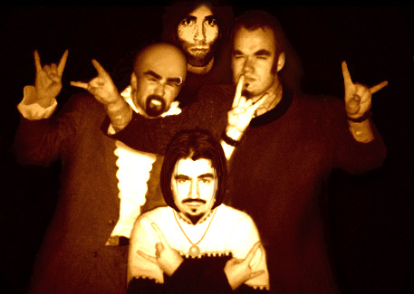
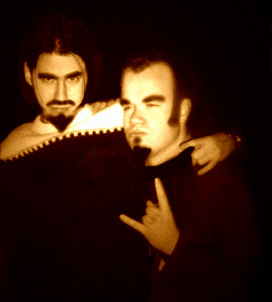
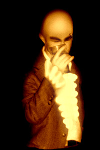

Mean dudes, mean pose.
There were lots of famous people there, and a lot of reporters,
so Brixton thought it would be a good chance for the guys to be seen
on national TV.
This is the first picture of CC's new sideburns. Frilly Pink goes prog-rock, anyone?

Prince Charming and Mr Death
Afterwards there were some who said the guys had been
seen doing the Macarena on stage.
This is just an evil rumour spread by
jealous people who couldn't get the band to give them their autographs.

Damn, it's empty. Again.
Steve to a fan: "How fast I am? Kid, I can turn every page in the New York phonebook in under five seconds. With one finger."
Dave to a group of girls: "I think I have some etchings at home that might interest all of you. Wanna look?"